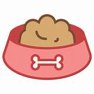

The Foods That Chocolate Labs Can and Cannot Eat
- What foods can chocolate labs not eat?
- Chocolate labs are unable to consume chocolate. This is one of the most unfortunate aspects of their life because the word "chocolate" is in their name. They are also unable to consume grapes. Grapes can make your lab vomit, and if they eat enough of them, they can cause kidney failure. It is critical that your chocolate companion eats only dog food.
- Food items that labs love?
- All food is a favorite of chocolate labs. My chocolate lab, in particular, is my personal vacuum cleaner and will eat anything I leave on the floor. They are nuts about peanut butter. However, it is critical that your dog consumes only natural foods with a minimal amount of preservatives.
- Foods to try out.
